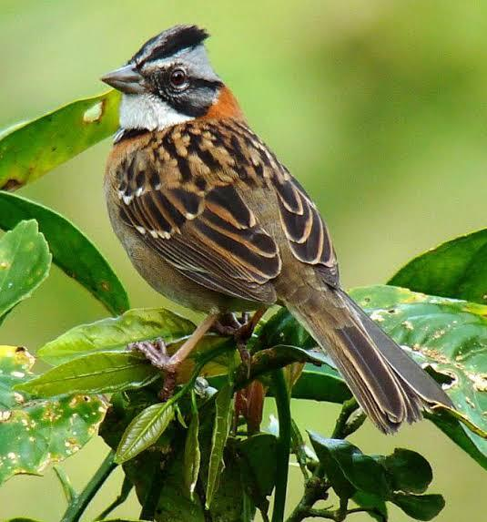

Publicado por la Unión de Ornitólogos de Chile
Listado de las especies con mayor número de reportes registrados en la plataforma.
1. Chincol (Zonotrichia capensis)

2. Tenca (Mimus theca)
Total avistamientos: 320
3. Loica (Leistes loyca)
Total avistamientos: 285
4. Picaflor Chico (Sephanoides sephaniodes)
Total avistamientos: 210
5. Queltehue (Vanellus chilensis)
Total avistamientos: 195
Santiago: 142
Valparaíso: 98
Concepción: 76
Pucón: 54
Chilena (75%): 75%
Extranjera (25%): 25%
Aviso legal: El material multimedia y los datos de avistamiento publicados en esta plataforma son aportados exclusivamente por personas voluntarias registradas.
© 2026 Unión de Ornitólogos de Chile.